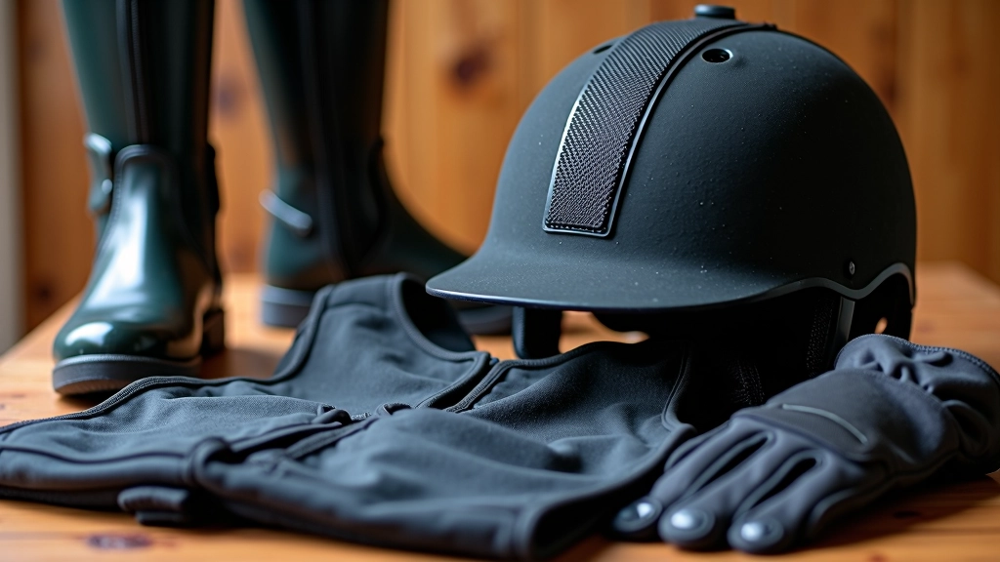

من نحن
فارس الأمان للفروسية — تعليم الفرسان الناشئين بأسس سلامة متقدمة
نحن ملتزمون بنقل معارف السلامة الفعلية إلى الفرسان الناشئين. مع كل جلسة تدريب، نركز على بناء ثقافة السلامة والثقة والتطور المستمر في رياضة الفروسية.
رحلتنا في تعليم الفروسية الآمنة
بدأنا برؤية بسيطة: كل فارس ناشئ يستحق تعليماً محترفاً يجمع بين المهارة والسلامة
فارس الأمان للفروسية لم تكن مجرد مشروع. كانت إجابة على احتياج حقيقي في مجتمع الفروسية المصري. رأينا أن الكثير من الفرسان الناشئين يفتقرون إلى تدريب منظم في السلامة الأساسية، والمعارف الموثوقة حول كيفية التعامل الآمن مع الخيل.
ما يميزنا هو أننا لا نقدم معلومات عامة فقط. نحن نركز على الجوانب العملية: اختيار المعدات الصحيحة، تقنيات الجلوس والتوازن، فهم سلوك الخيل، وقواعد السلامة في الحلقة. كل موضوع مصحوب بأمثلة واقعية وإرشادات خطوة بخطوة.
مع كل مقالة ننشرها، نتأكد أنها تعكس الممارسات الفضلى وتساهم في بناء أجيال من الفرسان الواعين بالسلامة والملتزمين بالمسؤولية.

كيف نقدم المعلومات
ننطلق من أساسيات واضحة وننتقل تدريجياً إلى موضوعات أكثر تقدماً
محتوى منظم
كل موضوع مقسم إلى أجزاء صغيرة سهلة الفهم. نبدأ بالأساسيات ثم نتقدم بحذر نحو المواضيع الأكثر تعقيداً.
تطبيق عملي
لا نؤمن بالنظرية وحدها. كل إرشادية تأتي مع أمثلة عملية وخطوات تطبيقية يمكن للفارس الناشئ متابعتها فوراً.
السلامة أولاً
في كل موضوع، السلامة ليست خيارية — إنها الأساس. نركز على الوقاية والممارسات الآمنة في كل جانب من جوانب الفروسية.
معارف موثوقة
نستند إلى معارف من الخبرة العملية والممارسات المعترف بها في مجال الفروسية الاحترافية والسلامة.
للفرسان الناشئين
نستهدف الفرسان الذين يبدأون رحلتهم. المحتوى مصمم لهم بالذات — واضح وسهل الفهم وخالٍ من التعقيدات غير الضرورية.
محدث باستمرار
المعارف تتطور والممارسات تتحسن. نحافظ على محتوانا محدثاً ومتوافقاً مع أحدث المعايير في مجال السلامة.
التزامنا نحوك
عندما تقرأ مقالة على موقعنا، أنت تعرف أنك تحصل على معلومات موثوقة. لا نبيع منتجات، ولا نحاول إقناعك بشيء غير ضروري. نحن هنا لنشاركك المعارف التي تحتاجها فعلاً.
فارس الأمان للفروسية مكان آمن للتعلم. سواء كنت تبدأ للتو أو لديك بعض الخبرة، ستجد هنا ما يساعدك على التطور بثقة وأمان. كل درس نقدمه مصمم لإعطاؤك الأساس الصحيح الذي تحتاجه للمتابعة مع مدرب حقيقي.
نؤمن أن السلامة والمهارة ليستا متعارضتين — بل هما متلازمتان. فارس آمن هو فارس يثق بنفسه ويتطور بشكل صحي.
ما نؤمن به
-
السلامة قبل كل شيء
لا توجد مهارة أهم من العودة إلى البيت سالماً. السلامة ليست قيد، بل هي الأساس الذي يسمح لك بالتطور بثقة.
-
التعليم المستمر
الفروسية رياضة تتطلب تعلماً مستمراً. نحن ننمو عندما نتعلم، وننجح عندما نطبق ما تعلمناه بشكل صحيح.
-
احترام الحصان
الخيل ليس آلة. إنه كائن حي يستحق الاحترام والرعاية. فارس جيد هو من يفهم احتياجات حصانه ويحترمها.
-
الوضوح والبساطة
المعلومات المعقدة لا تساعد أحداً. نحن نشرح الأشياء بطريقة واضحة وسهلة الفهم، بدون تعقيدات غير ضرورية.
تنويه مهم
المحتوى المقدم على هذا الموقع بغرض تعليمي وإعلامي فقط. لا يشكل بديلاً عن التدريب المباشر مع مدرب فروسية مؤهل ومتخصص. رياضة الفروسية تحمل مخاطر كامنة، والنتائج الفردية تختلف بناءً على الخبرة والممارسة والظروف الشخصية. نوصي بشدة بطلب التوجيه من محترف معتمد قبل البدء في أي نشاط فروسي. المعلومات على هذا الموقع تُقدم كما هي، بدون ضمانات أو التزامات معينة.